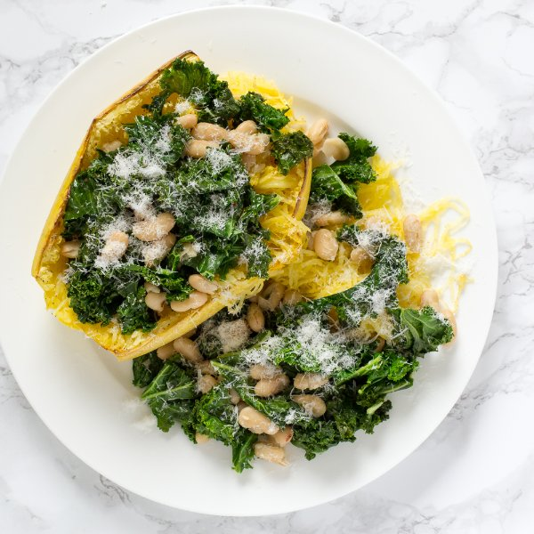

Baked Spaghetti Squash with Kale & Cannellini Bean Sauté

Prep Time
40 min
Nutrition (per serving)
511.7 kcalCalories
20.4 gProtein
82.1 gCarbs
15.7 gFat
Full nutrition table
| Calories | 511.7 kcal |
| Total fat | 15.7 g |
| Saturated fat | 3.3 g |
| Trans fat | 0.1 g |
| Cholesterol | 4.8 mg |
| Sodium | 435.2 mg |
| Carbohydrates | 82.1 g |
| Fiber | 18.6 g |
| Sugars | 23.2 g |
| Protein | 20.4 g |
| Potassium | 1504.5 mg |
| Calcium | 334.8 mg |
| Iron | 5.9 mg |
| Vitamin A | 818 IU |
| Vitamin C | 121.1 mg |
| Vitamin D | 1.4 IU |
Cookware
Ingredients
- 2 (15 oz) canscannellini (white kidney) beans
- 4 clovesgarlic
- 2 buncheskale
- 1 ozParmesan cheese
- 2 mediumspaghetti squash
- black pepper
- crushed red pepper
- extra virgin olive oil
- salt
Steps
- Preheat the oven to 500°F and place the rack in the center position. Line a baking sheet with aluminum foil to make cleanup easier (optional).
- Wash and dry the fresh produce.2 medium spaghetti squash
2 bunches kale - Halve the squash lengthwise and scrape out the seeds; Rub each half with olive oil and season with salt and freshly ground pepper. Place halves, cut side down, on a baking sheet.2 tbsp extra virgin olive oil
1 tsp salt
½ tsp black pepper - Place the squash in the oven (it doesn't have to be fully heated) and roast until tender so a knife can easily pierce though the flesh, 20-25 minutes.
- Drain and rinse the cannellini beans in a colander, then set aside to drain further.2 (15 oz) cans cannellini (white kidney) beans
- Cut out and discard the stems from each kale leaf; chop the leaves crosswise into 1-inch strips. Transfer to a large bowl.
- Preheat a skillet over medium heat.
- Trim off and discard the root ends of the garlic; peel and mince or press the garlic.4 cloves garlic
- Once the skillet is hot, add olive oil and swirl to coat the bottom.1 tbsp extra virgin olive oil
- Add the garlic and crushed red pepper to the skillet and stir until fragrant, 15-30 seconds.¼ tsp crushed red pepper
- Add the kale and ¼ cup of water to the skillet; cook, stirring constantly, until the kale is wilted, 2-3 minutes. Remove from the heat.
- Add the beans to the skillet and season the mixture with salt and pepper. Cook, stirring frequently, until the beans are just heated through, 1-2 minutes.½ tsp salt
¼ tsp black pepper - Remove the squash from the oven; allow squash to cool slightly, about 5 minutes. Using a fork, scrape up the squash flesh to make spaghetti-like strings (use an oven mitt or towel to hold it with your other hand).
- Finely grate 1 cup of Parmesan.1 oz Parmesan cheese
- To serve, divide the bean and kale mixture between the squash halves. Alternatively, spoon out the squash and divide between plates, then top with the bean and kale mixture. Sprinkle with the Parmesan. Enjoy!